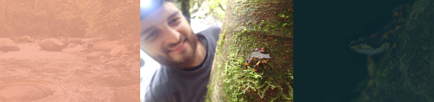

|  |
Diego A. Gómez-Hoyos |
PerfilInvestigadorBiólogo y MSc. en Conservación y manejo de vida silvestre. Coordinador de investigaciones en ProCAT Internacional (Costa Rica). Fundador de la iniciativa I'mage Conservation. |
ManejoDatosA través de sus actividades de investigación y conservación, los datos obtenidos y el análisis de los mismos para su publicación se encuentran alojados de manera libre. |
AccesoPublicacionesSu producción de literatura académica se encuentra en Acceso Abierto, utilizando repositorios para alojar sus pre-prints y post-prints |
||
|
Página web I'mage Conservation Identificador ORCID E-mail biodiego88@gmail.com |
Repositorio GitHub Repositorio OpenScienceFramework |
Repositorio ImpactStory Repositorio ORCID |